General Organic Chemistry
(Youtube playlist link)
- 01 : Inductive Effect and Acidic Strength
- 02 : Resonance 01: How to Draw Resonance Structures
- 03 : Resonance 02: Stability of Resonance Structures
- 04 : Resonance 03: Mesomeric Effect Complete Topic
- 05 : Hyperconjugation Effect in Carbocation, Free Radical
- 06 : Aromatic, Anti-Aromatic and Non-Aromatic Compounds
- 07 : CARBOCATION - Reaction Intermediate 01
- 08 : FREE RADICAL and CARBOANION - Reaction Intermediate 02
- 09 : CARBENE - Singlet and Triplet CARBENE
- 10 : Rearrangement of Carbocation | Hydride, Methyl and Phenyl Shifting
-
-
Introduction to GOC
-
Effects : Electron Displacement Effects:
- Inductive Effect
- Electromeric Effect (is the only temporary effect: only occurs when there is a reagent)
- Hyperconjugation Effect
- Resonance (Mesomeric) Effect
- Species
- Reaction Mechanism
-
Effects : Electron Displacement Effects:
-
Inductive Effect
- Inductive effect is the partial shifting of the \(\sigma\) (single bond) electron towards the more electronegative atom of the \(\sigma\) bond.
- Partial charges are developed.
- The inductive effect propagates and decreases with distance. (It is taken to travel upto 3 C-atoms and then cease, but actually it can go on upto \(\infty\) (see examples to understand this point)).
- This phenomenon is seen only in \(\sigma\) bond and not in \(\pi\) bonds.
-
Example 1 :
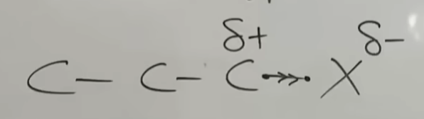
- Given electonegativity of X > C.
- So X will pull the single bond C-X towards itself.
- A small \(\delta\)- negative charge develops on the X and corresponding \(\delta\)+ positive charge develops on C.
- X group is known as electron withdrawing group.
- Also known as I- group (-ve wrt to C).
- This is the -I effect.
-
The small positive charge on the first C will attract
(with a decreased force) the \(\sigma\) bond between it
and the next C causing the second C to develop a smaller
\(\delta\)\(\delta\)+ positive charge. This in turn will
pull the next \(\sigma\), giving it a
\(\delta\)\(\delta\)\(\delta\)+ and so on.
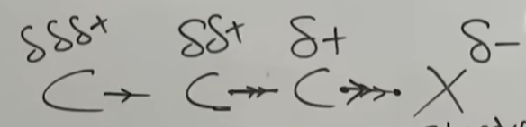 - I- Inductive effect is thus getting propagated leftward, though with decreased intensity.
-
Example 2 :
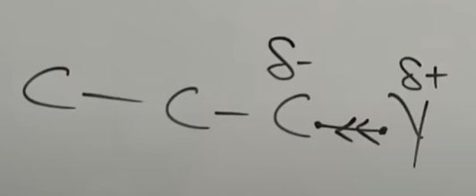
- Given electonegativity of Y < C.
- So C will pull the single bond C-Y towards itself.
- A small \(\delta\)+ positive charge develops on the Y and corresponding \(\delta\)- negative charge develops on C.
- Y group is known as electron donating group.
- Also known as I+ group (+ve wrt to C).
- This is the +I effect.
-
In this case, the second C will pull (with a drcreased
force), the \(\sigma\) bond between it and the previous C
it to develop a smaller \(\delta\)\(\delta\)- negative
charge. This propagates to the third C causing it to gain
a \(\delta\)\(\delta\)\(\delta\)- and so on.
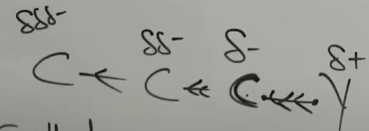 - I+ Inductive effect is thus getting propagated leftward, though with decreased intensity.
-
Why learn about inductive effect?
- Inductive effect is useful in understanding the stability of a charged species.
-
- Charged species are always more unstable as compared to neutral species.
- If charge is stationary (stuck between two atoms only), it will be more unstable.
- So, if charge is distributed among atoms, it will be more stable.
-
Example : which of the following four is most stable:
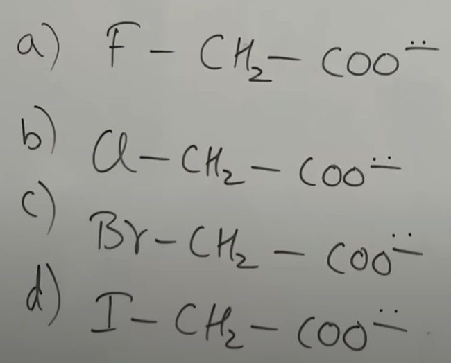- Electronegativity of F > Cl > B > I
- So F will pull the electron cloud (\(\sigma\) bond) towards itself with max force causing the distribution of the -ve charge to be more evenly distributed within the atoms. Hence it is the most stable.
- Stability order in this example: a > b > c > d.
-
-
-I order is given in the table below :
1 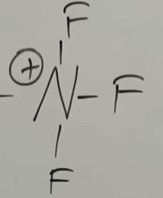 (\(\text{NF}_3^{+}\)) 7 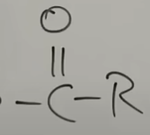 (Ketone)) 13 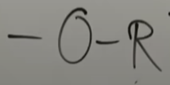 (Epoxy Group) 2 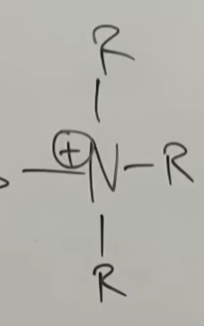 (\(\text{NR}_3^{+}\); R=alkyl group) 8 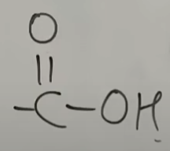 (Carboxylic Acid) 14 (Alcohol) 3 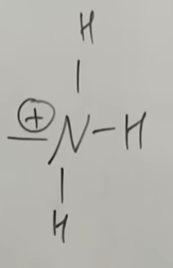 (\(\text{NH}_3^{+}\)) 9 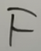 (Fluorine) 15 4 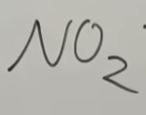 (\(\text{NO}_2\)) 10 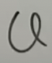 (Chlorine) 16 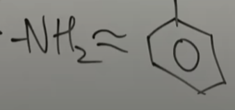 (\(\text{NH}_2\) almost same as phenyl group) 5 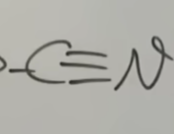 (Cyanide) 11 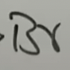 (Bromine) 17 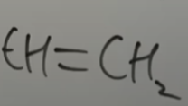 6 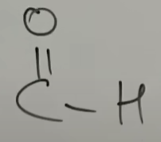 (Aldehyde) 12 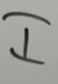 (Iodine) 18 (Hydrogen) - Can assume I of hydrogen to be zero.
- After hydrogen, I+ will start.
-
Question : Which is the most stable among the below three
compounds
-
-I order is given in the table below :
-
-I (electron accepter) Acidic Order
- Stability
-
In the acid:
\(\text{HA} \leftrightarrow \text{H}^+ + \text{A}^-\)
More the stability of \(\text{A}^-\), the better is the acid. - In other words, (in general) more is the -I effect, more is the acidic nature.
-
Question 1 : Which is the most acidic
-
Question 2 : Which is the most acidic
-
Question 3 : Which is the most acidic
-
+I Effect
- +I effect happens when there is electron donating group.
-
+I order is given in the table below :
1 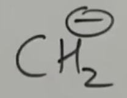 2 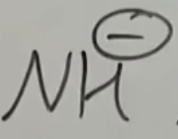 3 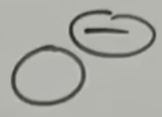 4 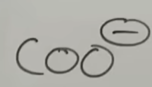 5 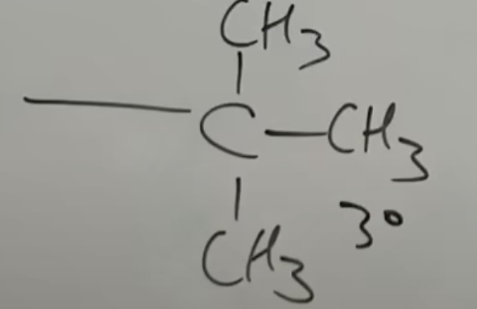 ( \(\text{3}^o\) Tertiary Alkyl) 6 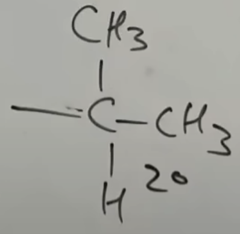 ( \(\text{2}^o\) Secondary Alkyl) 7 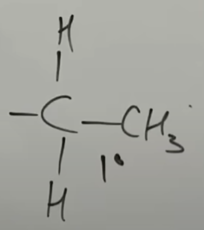 ( \(\text{1}^o\) Primary Alkyl) 8 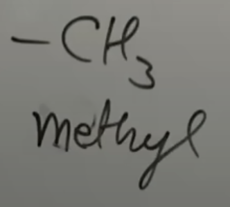 (Methyl)
-
+I (electron donor) Acidic Order
- Stability
-
In the acid:
\(\text{HA} \leftrightarrow \text{H}^+ + \text{A}^-\)
More the stability of \(\text{A}^-\), the better is the acid. - In other words, (in general) more is the -I effect, more is the acidic nature.
-
Question 1 : Which is the most acidic
-
Question 2 : Which is the most acidic
-
Question 3 : Which is the most acidic
-
Introduction to GOC